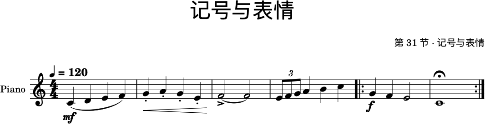

第 31 节 · 记谱进阶
会打音符，和会记谱是两回事
音符只告诉你"哪个音、多长"。剩下的事情—— 这一句是连的还是断的、这里要推上去还是收回来、这一段要不要重复—— 全靠记号。
这一节讲的就是这些记号：它们在哪加，以及它们在音乐上到底改变了什么。
一 · 记号都藏在三个地方
左边的面板。MuseScore 4 的左侧有一排面板（音符、记谱、行、文字、属性……）。 大部分记号在这里找：力度、速度文字、反复记号、连音线、装饰音。 找不到就点面板上的放大镜搜名字，或者干脆用菜单添加。
音符输入工具栏。进入输入模式（N）之后，谱面上方会出现一条工具栏， 里面是时值、变化音、连线、附点这些"写音符时就要决定"的东西。
属性面板。选中任何一个元素以后，右侧的属性面板会告诉你 它当前是什么设置，并且允许你直接改。这是 MuseScore 4 最好用的地方： 不用记"在哪个菜单里"，点中它就能改它。
二 · 一张谱子上能放多少种记号
下面这份谱子把最常用的记号都放在了一起。对着图一条一条看：

| 记号 | 在谱上的位置 | 它改变了什么 |
|---|---|---|
| =120（速度） | 第一小节上方 | 播放速度。它在谱面上是一个数，不是一个形容词——这也是本站坚持用 BPM 不用"快一点"的原因。 |
| mf（力度） | 第一小节下方 | 整体的响度基准。它写在谱子的某一处，之后一直有效，直到出现下一个力度记号。 |
| 圆滑线（连音线） | 第一小节的弧线 | 不同的音连起来，要吹/弹得连贯。这是句法，不是时值。 |
| 跳音（点） | 第二小节的音符上方 | 把音吹短、断开。和圆滑线正好相反。 |
| 渐强（开口的 <） | 第二小节下方 | 从这一处到收口处慢慢变响，是一条"过程"，不是某一个点。 |
| 延音线（同音连线） | 第三小节 | 同一个音连着写两个音符，第二个不再发音——合起来是一个长音。它和圆滑线的区别是这一节最要紧的一条。 |
| 重音（>） | 第三小节第一个音 | 这个音要更用力地起。 |
| 三连音（数字 3） | 第四小节 | 把两个八分音符的时间分成三等份。节奏上"多出一个音"。 |
| 反复记号 | 第五、六小节的左右两侧 | 这两小节要再走一遍。谱子因此可以写短，演奏出来更长——这是所有流行音乐的省钱秘诀。 |
| 延长记号（𝄐） | 最后一个小节 | 这里停多久由演奏者决定。软件不会替你演，它只标出来。 |
三 · 圆滑线和延音线：最常被搞混的一对
两条弧线长得几乎一样，意思完全不同：
圆滑线（slur）连的是不同的音：C–D–E–F 一条弧线， 意思是这四个音要连成一句。每个音都要重新发音，只是中间不断开。
延音线（tie）连的是同一个音：两个 G 用弧线连起来， 意思是"弹（吹）一次，响满两个音符的时间"。第二个 G 是不发音的。
为什么非要用两个记号？因为小节线。一个音如果要跨过小节线继续响， 你没办法把它写成一个音符（小节有自己的时值上限），只能拆成两个、用延音线接起来。 延音线是记谱的产物，圆滑线是音乐的要求。
四 · 加记号的标准流程
不管加哪一种，动作都是同一套：
一 · 选中目标。要加力度，就选中它下面那个音；要加连线，选中线覆盖的第一个音。
二 · 从面板拖入或点选。在左侧面板里找到记号，双击或拖到谱上。
三 · 用属性面板调。选中刚加上的记号，右侧属性面板里能改它的位置、 形状、是否自动避让。位置不对不要硬拖——先看属性面板里的"自动布局"是不是开着。
四 · 听一遍。力度和跳音都会影响播放，加了以后播放一次就能听出区别。 这一点很重要：谱面上的记号在软件里不只是图形，它是真的在改变声音。
五 · 练习
一 · 一句一弧。把你第 30 节写的 8 小节谱子分成四句， 每一句用一条圆滑线连起来。听一遍——同一串音，加了圆滑线就不一样了。
二 · 长短对比。把第二句全部加跳音，和第一句形成对比。 这就是最简单的"一句连、一句断"。
三 · 力度画一条线。在第三句下面加一条渐强，第四句下面加一条渐弱。 谱面上现在有了一个完整的"上-下"弧线。
四 · 用反复记号省一半纸。把整首放成 ||: 反复 :||， 听它自己走两遍。你会立刻明白为什么流行歌的谱子可以只有一页。
五 · 一个自检。把谱子导出成 PDF，打印或放大看一眼： 记号有没有和音符打架？这句话你要传达的东西，别人光看谱能不能看懂？
六 · 参考
资料
MuseScore 官方手册（中文）
——"记谱"一章里力度、连音线、反复记号各有专门的页面
英文手册里对应的三页：
Dynamics（力度） ·
Tempo markings（速度记号） ·
Repeats & jumps（反复与跳转）
本站对应乐理：第 19 节「记谱法与记号」把谱面记号系统讲了一遍；
第 23 节「动机与乐句」讲的是"句法"本身——圆滑线画在哪儿，取决于你想让这句话怎么唱。
示例谱在
assets/musescore/31-markings.musicxml，
用 MuseScore 打开就能看到每一种记号是怎么加的、属性面板里是什么设置。
一句话带走
音符决定"是什么"，记号决定"怎么说"。 同一串音，连线、断奏、力度、速度换一换，就是另一句话—— 这件事在第 23 节是听出来的，在这里是写出来的。